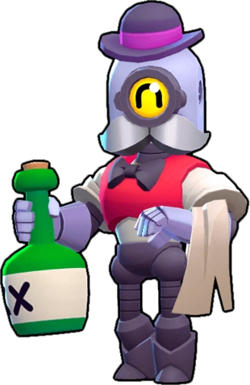

¿Quién es Barley?
Este barman robótico ha sido diseñado para preparar bebidas y charlar con la clientela. Barley también se dedica a mantener el bar limpio con una patena a toda costa, aunque tenga que patear el trasero de algún que otro cliente patoso.
Barley es un robot de rareza Especial que lanza botellas sobre todo a distancia. Su súper es lanzar 5 botellas a la misma vez.
|  |
NIVEL DE FUERZA 11 |
Sus gadgets
 |
MEJUNGE PEGAJOSO: Barley rompe una botella que contiene un mejunje pegajoso y deja un charco que ralentiza a todos los rivales que entren en contacto con él. |
 |
TÓNICO DE HIERBAS: Barley lanza un brebaje curativo a los aliados que se encuentren cerca, generando una zona de curación que regenera 720 puntos de salud por segundo. |
Sus habilidades estelares
 |
LICOR CURATIVO: Barley recupera 480 puntos de salud con cada uno de sus ataques |
 |
LICOR EXTRANOCIVO: El ataque de Barley inflige 200 puntos más de daño por segundo |
Su hipercarga
 |
FURIA EMBOTELLADA: Barley lanza 3 botella enormes que destruyen todos los arbustos al impactar. |
 Braian Arancibia
Braian Arancibia Aya El Baarar
Aya El Baarar